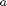
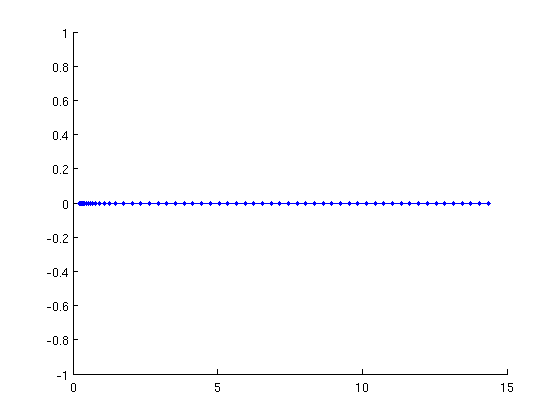
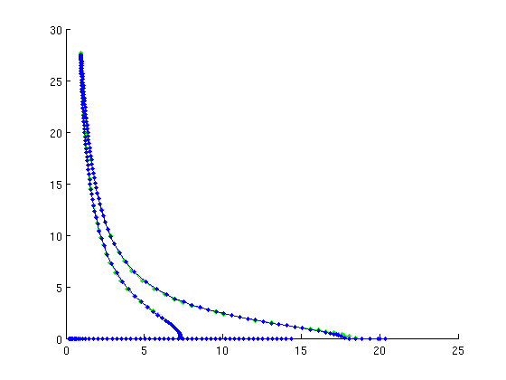
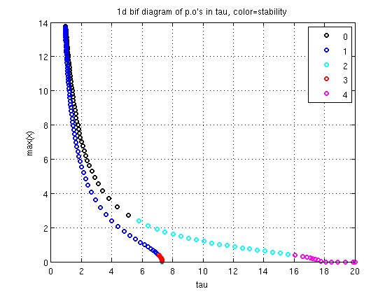
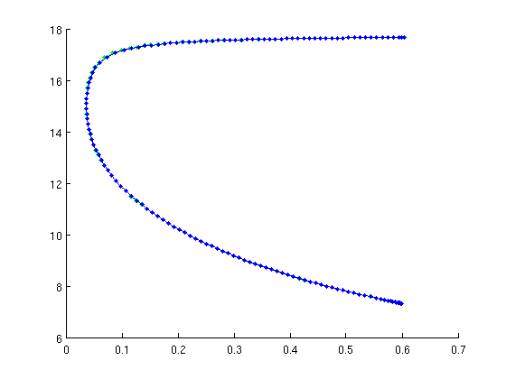
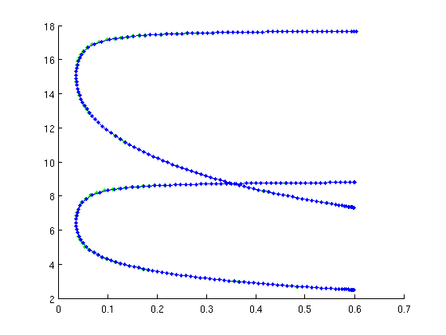

Minimal demo - Equilibria, Hopf bifurcations, periodic orbits
This part creates the computations that are possible with standard DDE-Biftool. This demo requires minimal_demo.html to have run beforehand.
(c) DDE-BIFTOOL v. 3.1.1(86), 07/01/2015
Contents
Definition of initial (trivial) equilibrium
The system has only the trivial equilibrium for positive values of the parameter . Still, we initialize a branch using the convenience functions
function [br,suc]=SetupStst(funcs,varargin)
Apart from the first argument (funcs) all arguments of gen_stst are name-value pairs. Important arguments:
- 'x': initial guess for equilibrium state of system
- 'parameter': parameter values of initial equilibrium
- 'contpar': index of the continuation parameter
- 'step': size of initial step along continuation parameter (can be negative)
- 'dir': index of parameter, which will be varied in initial step (default is contpar(1)) Output br is a branch of stst (equilibria) containing the first two points, suc is a flag indicating success. Other name-value inputs pairs get passed on to the substructures of the output.
triv_eqs=SetupStst(funcs,'x',[0;0],'parameter',[0.2,0.5,0.6,0.05],... 'contpar',indtau,'max_step',[indtau,0.3],'max_bound',[indtau,20],... 'newheuristics_tests',0,'minimal_real_part',-1);
Stability of trivial equilibria
We continue the trivial equilibrium in tau and compute its stability (which changes). The convenience function GetStability recomputes the eigenvalues if not yet present and returns as its first output nunst_eqs the number of unstable eigenvalues for bifurcation detection. Its first argument is the branch structure for which stability information is required.
disp('Trivial equilibria');
figure(1);clf
triv_eqs=br_contn(funcs,triv_eqs,60);
triv_eqs=br_stabl(funcs,triv_eqs,0,1);
nunst_eqs=GetStability(triv_eqs);
Trivial equilibria
Branch off at 2nd Hopf bifurcation to find periodic orbits
We find the first point at which the number of unstable eigenvalues is greater than 2. The convenience function SetupPsol performs the initial corrections for the first two points along the branch of periodic orbits.
function [per,suc]=SetupPsol(funcs,branch,ind,varargin)
The first input funcs is the system definition structure, the second input branch is the branch from which one wants to branch off, and ind is the index of the point along this branch. The point can be either of type stst with stability information or aof type hopf. The other arguments are name-value pairs. Important inputs:
- 'contpar' (default []): index of continuation parameter
- 'radius' (default 0.01): amplitude of first periodic orbit on branch
- 'degree' (default 3): degree of collocation polynomials used for periodic orbits
- 'intervals' (default 20): number of collocation intervals
- 'hopfcorrection' (default true): call p_correc to find the Hopf point accurately
Output per is a branch of periodic orbits with the first two points, suc is a flag indicating success. Other name-value input pairs get passed on to the substructures of per.
Note how the 'max_step' field of the per.parameter permits now to use index 0 to indicate a restriction on the overall secant length (measured with p_norm) Subsequently the newly created branch of periodic orbits is continued and its stability is determined.
disp('Branch off at 2nd Hopf bifurcation'); ind_hopf=find(nunst_eqs>2,1,'first'); fprintf('Initial correction of periodic orbits at Hopf:\n'); [per_orb,suc]=SetupPsol(funcs,triv_eqs,ind_hopf,'intervals',20,'degree',4,... 'max_bound',[indtau,20],'max_step',[0,2;indtau,0.5]); hold on per_orb=br_contn(funcs,per_orb,300); per_orb=br_stabl(funcs,per_orb,0,1); nunst_per=GetStability(per_orb,'exclude_trivial',true);
Branch off at 2nd Hopf bifurcation Initial correction of periodic orbits at Hopf: Warning: Matrix is close to singular or badly scaled. Results may be inaccurate. RCOND = 8.286101e-24. Warning: Matrix is close to singular or badly scaled. Results may be inaccurate. RCOND = 4.183132e-29. Warning: Matrix is close to singular or badly scaled. Results may be inaccurate. RCOND = 3.003721e-50. Warning: Matrix is close to singular or badly scaled. Results may be inaccurate. RCOND = 7.896311e-44. Warning: Matrix is close to singular or badly scaled. Results may be inaccurate. RCOND = 9.594475e-65. Warning: Matrix is close to singular or badly scaled. Results may be inaccurate. RCOND = 1.602239e-65. Warning: Matrix is close to singular or badly scaled. Results may be inaccurate. RCOND = 2.953069e-87. Warning: Matrix is close to singular or badly scaled. Results may be inaccurate. RCOND = 1.553125e-76. BR_CONTN warning: boundary hit. Warning: Matrix is close to singular or badly scaled. Results may be ...
1d bifurcation diagram
Colors indicate number of unstable Floquet multipliers
colors='kbcrm'; xp1=arrayfun(@(x)x.parameter(indtau),per_orb.point); yp1=arrayfun(@(x)max(x.profile(1,:)),per_orb.point); pl1={}; for i=0:max(nunst_per) pl1=[pl1,{xp1(nunst_per==i),yp1(nunst_per==i),[colors(i+1),'o']}]; %#ok<AGROW> end figure(2); plot(pl1{:},'linewidth',2); grid on xlabel('tau'); ylabel('max(x)'); legend({'0','1','2','3','4'}) title('1d bif diagram of p.o''s in tau, color=stability')
Continue 2nd Hopf bifurcation
Similar to SetupPsol the convenience function SetupHopf creates the initial Hopf branch. Its first arguments are funcs, the branch along which the Hopf bifurcation was detected (here triv_eqs), and the index of the point near which the Hopf bifurcation was detected.
function [hbranch,suc]=SetupHopf(funcs,branch,ind,varargin)
Important parameters:
- 'contpar': continuation parameters (vector of length >=2),
- 'dir': index of parameter, which is varied at initial step. The default is [], which means that only one point on the branch is computed. This is useful if one wants to correct only a single Hopf point.
- 'step': initial step along branch (default 1e-3)
- 'excudefreqs': list of frequencies that should be excluded (default []). The initial guess for the Hopf frequency is the complex conjugate pair closest to the imaginary axis, after one takes away a pair of eigenvalues for each frequency listed in excludefreqs.
All other name-value pairs can be used to replace fields in the structures of the Hopf branch. Otherwise, the output branch2 inherits all values from the input branch. The subsequent continuation computes toward smaller b for 80 steps.
hopfopts={'step',-1e-3,'max_step',[indtau,0.2;indb,0.01],'max_bound',[indb,0.6]};
hopf=SetupHopf(funcs,triv_eqs,ind_hopf,'contpar',[indb,indtau],'dir',indb,...
hopfopts{:});
figure(1);clf
hopf=br_contn(funcs,hopf,200);
BR_CONTN warning: boundary hit.
Continue 1st Hopf bifurcation
We also find the first hopf bifurction of the branch triv_eqs and continue that, too.
ind_hopf1=find(nunst_eqs>0,1,'first'); hopf1=SetupHopf(funcs,triv_eqs,ind_hopf1,'contpar',[indb,indtau],'dir',indb,... hopfopts{:}); figure(1); hopf1=br_contn(funcs,hopf1,200);
BR_CONTN warning: boundary hit.
Save and continue
For continuation of folds and torus bifurcations of periodic orbits, see minimal_demo_extra_psol.html. For normal forms of Hopf bifurcations, see minimal_demo_extra_nmfm.html. Final results in minimal_demo_plot_2dbif.html.
save('minimal_demo_stst_psol_results.mat')